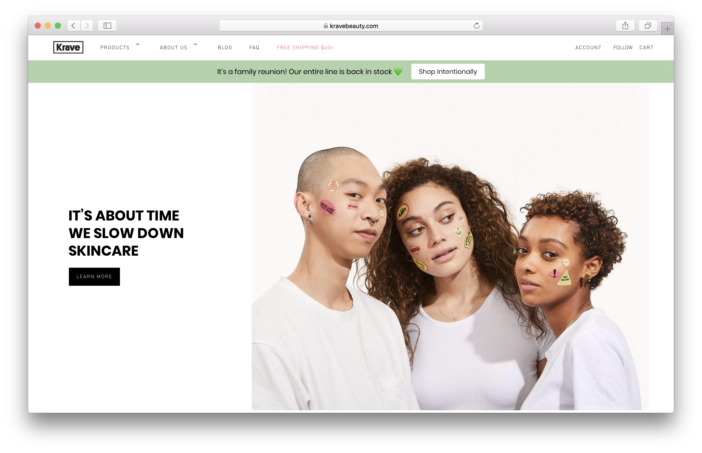
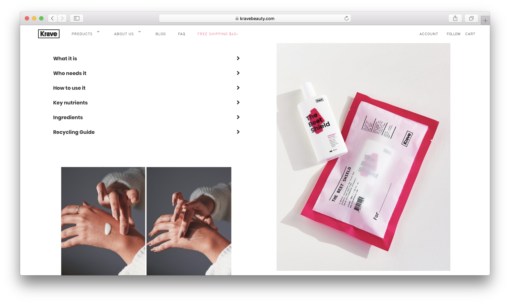
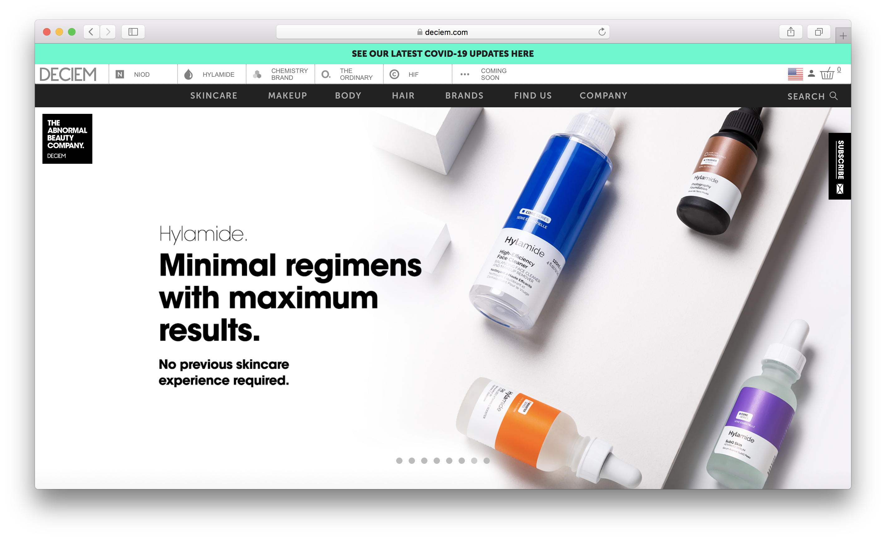
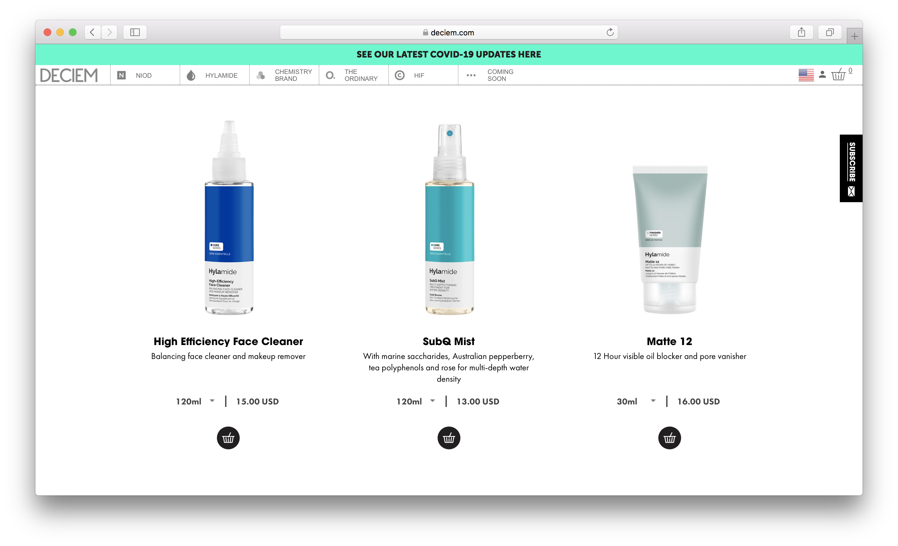
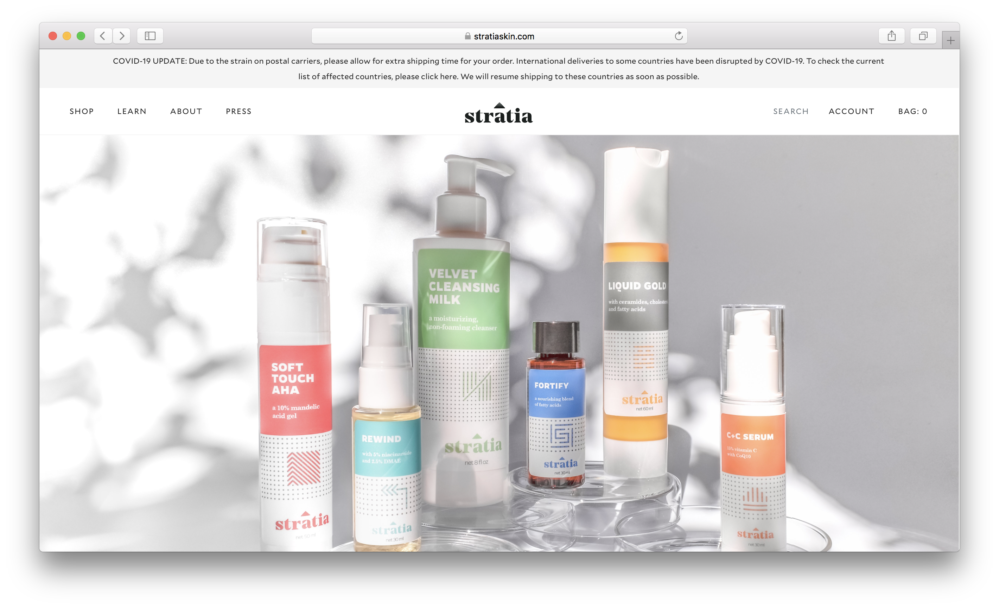
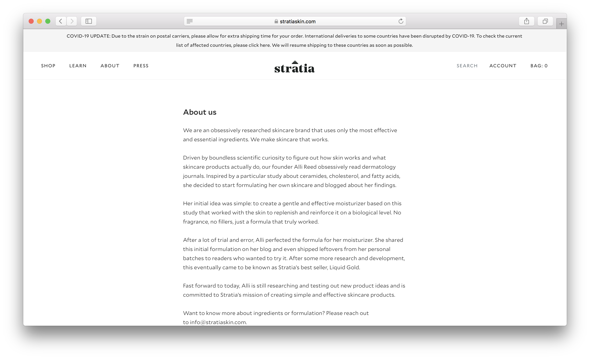
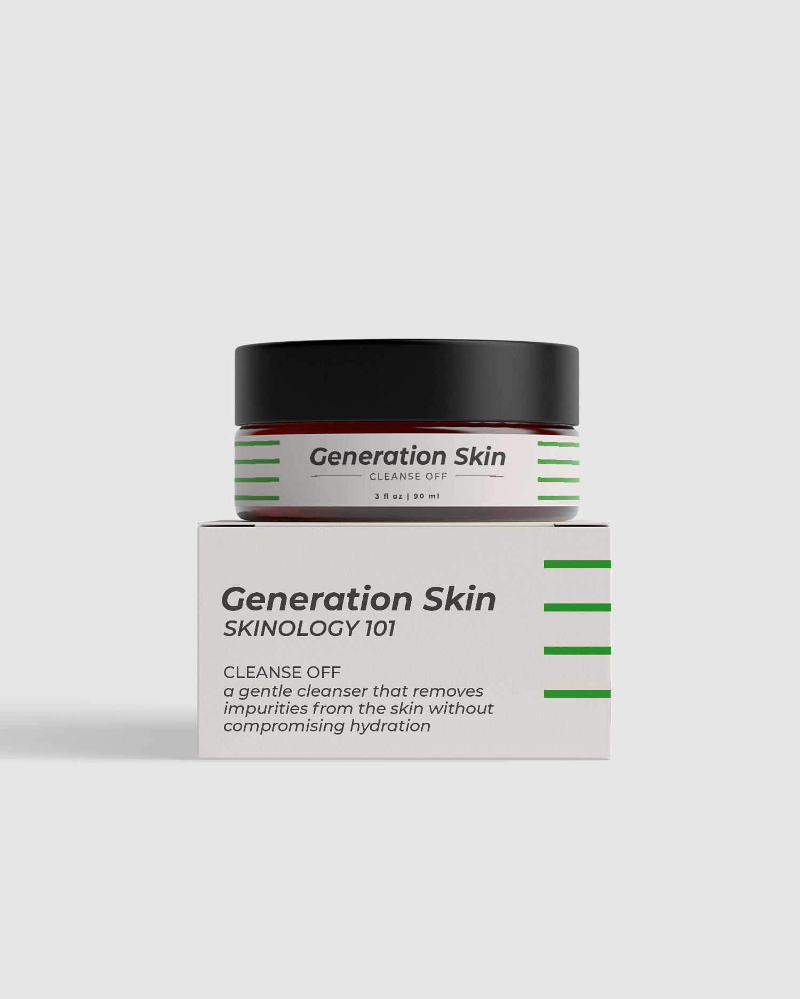
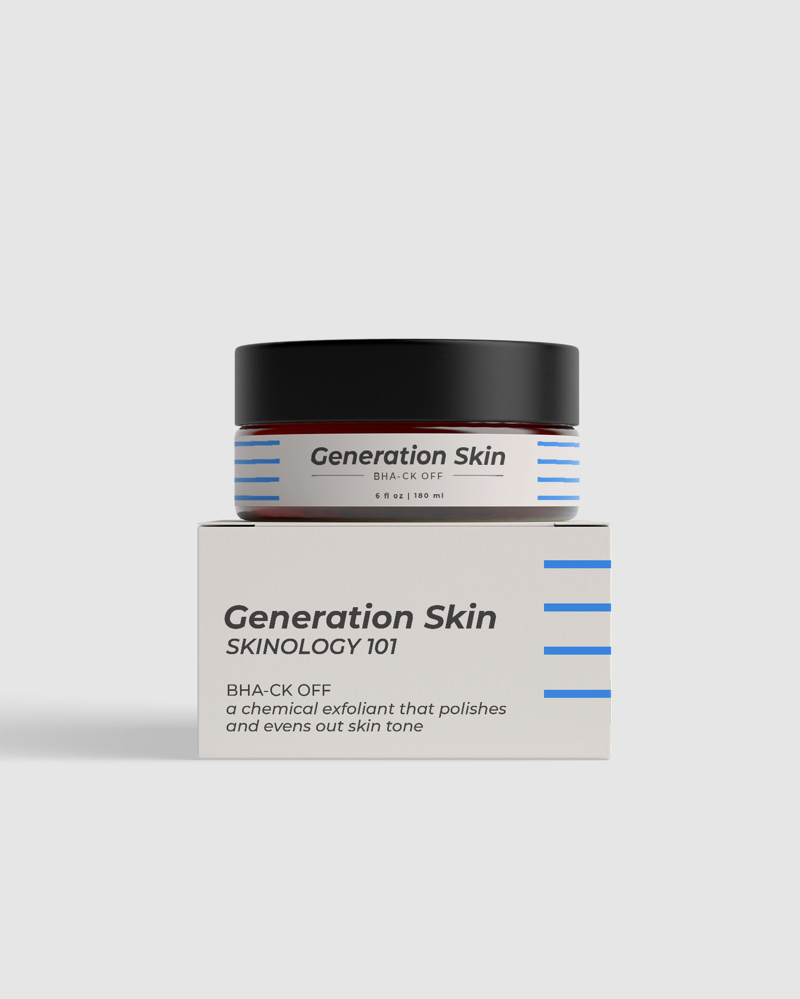
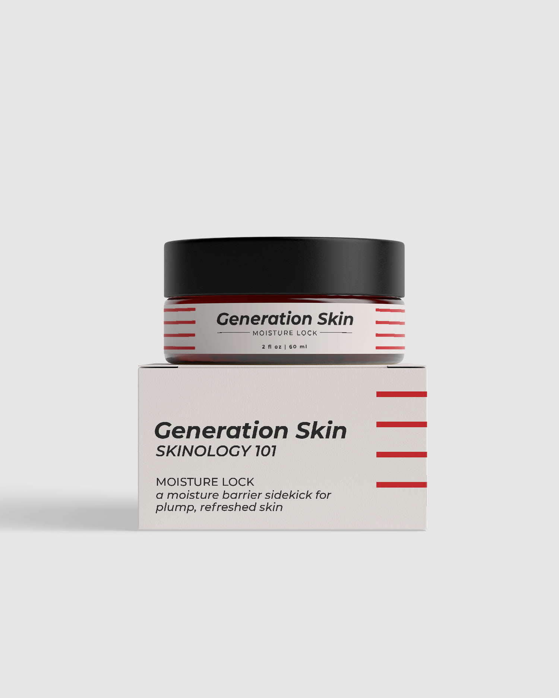
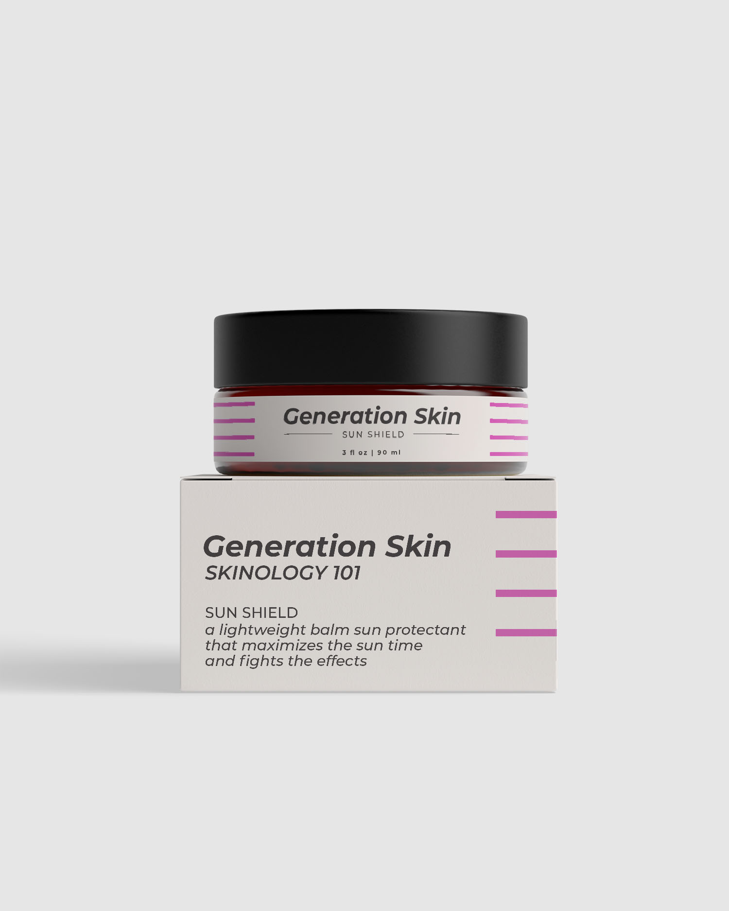

Final Project Proposal
Introduction
Generation Skin
Based in San Francisco, Generation Skin is a indie skincare company that provides innovative products and professional consultations for people looking to streamline their self-care process.
Target Audience
Generation Skin gears towards both current enthusiasts and those interested in learning about all things skin. The profile demographics of Generation Skin's target audience are predominantly female, aged 18-40+.
These current and not-yet skincare enthusiasts are interested in continuing or starting their skincare journey with Generation Skin. They use this website to view Generation Skin's product line, read about the company ethics and philosophy, schedule personal consultations with in-house dermatologists, and educate themselves about basic skincare methodology.
Comparative Analysis
Krave Beauty
 Deciem
 Stratia
 Website Content
Home

[portrait of co-founder: Emily]
Skincare that helps you care.
Smart staples backed by clinical research and years of skincare junkies.
At Generation Skin, we provide your basic skincare needs: a streamline product range and access to board-certified dermatologists.

[product photos of Generation Skin's bestsellers, Moisture Lock and Cleanse Off]
Streamlined Product Line
The starter collection. Made for all skin.
This collection gravitates towards solid skincare science. It's no-frills, made accessible for both the current and not-yet skincare enthusiast. Wherever you are on your skincare journey, Generation Skin has some seriously versatile products to try out!
[portrait of model: Natalie]
Consultations with Dermatologists
Skincare experts can be daunting and expensive. We wanted to boil it down for you.
Generation Skin recognizes that finding a dermatologist is not always possible. At our San Francisco location, we bridges the gap between professional advice and practical self-care. Schedule an appointment today!
You are Generation Skin. Join the Generation Skin family!
Products
Looking to update or start your skincare journey?
Generation Skin's starter collection, Skinology 101, hosts core skincare products: cleanser, serum, moisturizer, and sun protectant.
Get the goods!
[product image of Cleanse Off]
Cleanse Off
a gentle cleanser that removes impurities from the skin without compromising hydration
$18.00
[product image of BHA-ck Off]
BHA-ck Off
a chemical exfoliant that polishes and evens out skin tone
$14.00
[product image of Moisture Lock]
Moisture Lock
a moisture barrier sidekick for plump, refreshed skin
$20.00
[product image of Sun Shield]
Sun Shield
a lightweight balm sun protectant that maximizes the sun time and fights the effects
$18.00
Products avaliable at in-house location in San Francisco.
Consultations
[image of marbled pink background ]
Have some skincare questions?
The skincare world is easy to get lost in. Generation Skin provides expert consultations at a fraction of the cost.
Your skincare questions, answered.
[portraist of Lisa Farlow]
Lisa Farlow, PA-C
For Lisa, the desire to help others began when she was a young child doing mission work with her family in Mexico. Today, Lisa’s passion for people shows in every connection she makes with her patients. She understands the impact skin conditions can have and never quits when it comes to finding the right diagnosis and right treatment plan for each patient. This dedication means each patient enjoys the highest quality care, and the confidence that comes from having healthy, beautiful skin.
Contact consultations@generationskin.com to schedule an appointment with Lisa.
[portraist of Kirsten Waters]
Jenna Garner, NP
Jenna is a certified family nurse practitioner who holds a Maser of Science in Nursing from California State University, Fresno, graduating with honors. Her genuine passion for dermatology and her easy going personality helps patients feel comfortable. She continues to strive for excellence as she is currently working on an advanced voluntary certification (Dermatology Certified Nurse Practitioner, DCNP).
Contact consultations@generationskin.com to schedule an appointment with Jenna.
[portrait of Kirsten Waters]
Kirsten Waters, NP
Kirsten is a Nurse Practitioner and specializes in general and medical dermatology. She has over 15 years of experience in the field of medicine. Kirsten has always been interested in teaching people how to keep their bodies healthy. Kirsten has been specializing in dermatology for over 10 years. She treats people of all ages but shares a connection when treating adolescents and loves getting to know them.
Contact consultations@generationskin.com to schedule an appointment with Kirsten.
Let's get skin-psyched!
About + Connect
452 O'Farrell St.
San Francisco, CA
94102
Weekdays 8 a.m. to 4 p.m.
+1(415)286-5555
hannah@generationskin.com
We are an obsessively researched skincare brand that uses only the most effective and essential ingredients. We make skincare that works.
Driven by boundless scientific curiosity to figure out how skin works and what skincare products actually do, our founders Emily and Hannah obsessively read dermatology journals. Inspired by a particular study about cermindes and fatty acids, they decided to start formulating their own skincare and blogged about their findings.
Their initial idea was simple: to create a gentle and effective moisturizer based on this study that worked with the skin to replenish and reinforce it on a biological level. No fragrance, no fillers, just a formula that truly worked.
After a lot of trial and error, they perfected the formula for their moisturizer. This eventually came to be known as Generation Skins’s best seller, Moisture Lock.
Fast forward to today, Emily and Hannah are still researching and testing out new product ideas but committed to expanding a new branch in Generation Skin: accessible dermatology. They work alongisde local skin experts to continue providing answers and resources to your skincare questions.
Want to know more about ingredients, formulation, or anything skin? Reach out to info@generationskin.com.